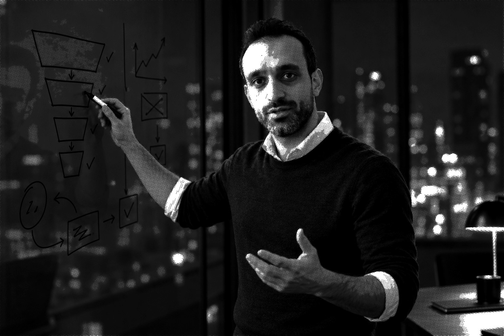

Exit Without Execution
Validate the commercial thesis on paper first. Funnel, conversion, pricing, revenue, IP. Especially in hardware, where execution costs the most and a wrong thesis costs everything.
Framework in use. Book in development.Fractional CTO and founder coach for deep tech hardware. What you do not want to hear, early enough to act.
Book a call
Companies and institutions I have built with
Over 19 years and seven ventures I learned that the biggest risk in a startup is not whether the technology works. It is whether anyone was ever going to pay for it. Most founders find out the hard way, after years and millions. I help them find out faster.

I work in four modes:
Five ways to work with me. All of them start with the same question: will anyone pay for this?
Exit Without Execution, applied.
Thirty to forty-five days to prove or kill a venture thesis on paper: customer, funnel, pricing, revenue model and IP position, before you commit years and capital to building it.
Hardware from prototype to manufacturable product.
The hardest phase of deep tech. Design for manufacturing, new product introduction, compliance, supply chain and the team to run it after me.
For investors and boards.
An operator's read on a hardware company: what is real, what is a demo, what it will cost to reach volume, and which risks the deck leaves out.
The conversation nobody else will have with you.
For founders who want a challenger, not a cheerleader. Positioning, validation, priorities and the patterns that put startups in the 99% Club.
Agents and automation that run every day.
Multi-agent pipelines, digital twins and automations wired into the tools a business already uses. Built to run in production, not to demo once.
Two frameworks on their way to becoming books, and one belief about speed.
“What founders hire me for: telling them what they do not want to hear, early enough to do something about it.”
Validate the commercial thesis on paper first. Funnel, conversion, pricing, revenue, IP. Especially in hardware, where execution costs the most and a wrong thesis costs everything.
Framework in use. Book in development.The predictable ways founders disqualify themselves from the one percent: loving the solution before the problem, building a product when the customer wanted a service, skipping the pricing test.
Drawn from seven ventures. Book planned.Stacked strategies and stacked tools mean “I wonder” can become “here, take a look” in hours, not quarters. Fast start means slow and focused: do one small thing brilliantly, then compound.
How I work, every day.Occasional pieces on intelligence, hardware, founders and what I am learning. Once in a while, not on a schedule.
One perspective on the AI moment. I would not call it artificial intelligence: silicon, lithium and energy arranged by creatures made of minerals and energy is nature trying a new substrate, and life does not go backwards.
Read the pieceOne book, one actionable blueprint, under ten minutes.
My YouTube channel. Founder and operator books, personal development, strategy. Three episodes a week.
Watch on YouTubeSeven ventures, three CTO seats, one lab. Newest first.
Straight answers to what founders and investors ask before they book.
Reza Larimi is a fractional CTO and founder coach for deep tech hardware, based in Vancouver, Canada. He works in four modes: Research Engineering Manager at WearTech Labs, Simon Fraser University's wearable technology facility; fractional CTO and hardware advisor through his practice, New Element Research and Development; MBA candidate in Innovation and Value Creation at SFU; and builder of AI agent systems.
A fractional CTO is a senior technical leader who works with a company part time, usually for a defined phase, instead of as a full time hire. In deep tech hardware the phase that needs one most is prototype to manufacturable product: design for manufacturing, new product introduction, compliance, supply chain, and building the team that runs it afterwards. Reza takes on that phase and hands over to the team he helped hire.
Exit Without Execution is Reza Larimi's framework for validating the commercial thesis of a venture on paper before building it. It tests the customer, the funnel, conversion, pricing, the revenue model and the IP position first. It matters most in hardware, where execution costs the most and a wrong thesis costs everything. The framework is in use with clients and a book is in development.
The 99% Club is Reza Larimi's name for the predictable ways founders disqualify themselves from the one percent of startups that succeed: loving the solution before the problem, building a product when the customer wanted a service, and skipping the pricing test. It is drawn from his seven ventures and is the subject of a planned book.
A Venture Validation Sprint is a thirty to forty-five day engagement that proves or kills a venture thesis on paper, before the founder commits years and capital to building it. It applies Exit Without Execution to one venture: customer, funnel, pricing, revenue model and IP position, with a clear go or no-go at the end.
Yes. For investors and boards he provides an operator's read on a hardware company: what is real, what is a demo, what it will cost to reach volume, and which risks the pitch deck leaves out.
Stack and ship is how Reza works every day. Stacked strategies and stacked AI tools mean an idea can become a working thing to look at in hours rather than quarters. The rule behind it is to start small and focused, do one thing brilliantly, then compound.
Book to Blueprint is Reza Larimi's YouTube channel. Each episode turns one book into one actionable blueprint in under ten minutes, covering founder and operator books, personal development and strategy. New episodes three times a week at youtube.com/@reza-larimi.
Over 19 years in hardware and mechatronics, seven ventures and three CTO seats, five patents covering sensors, test beds and methods, and an alumnus of Entrepreneur First in Toronto. Roles include CTO and co-founder of ForthGrid and of Orchard Technologies, CEO and co-founder of GutPlans, R&D product lead at Global Heat Transfer, and research assistant at the University of British Columbia in stretchable sensors, adaptive control and robotic hands.
Book a thirty minute online call at cal.com/rezalarimi/intro or from the Book a call section of this site. Bring a venture, a hardware problem or a question you have been sitting on. Reza is based in Vancouver and works with founders and investors remotely.
Thirty minutes, online. Bring a venture, a hardware problem or a question you have been sitting on.
Pick a time at cal.com/rezalarimi/intro